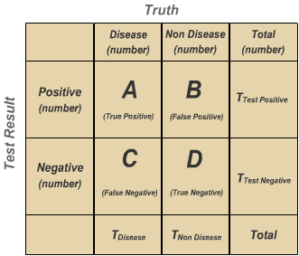

3.2 Models and binary diagnosis
1 Binary Diagnosis
Binary diagnosis is the process of evaluating data and classifying it in one of two categories. For example, one can look at a patient, and decide if they are sick or not. Another example are PCR tests for Covid, which identify the presence or not of the virus in the patient. The purpose of this class is to discuss how we can measure the quality of a binary diagnosis test.
We are going to use data from benign and malignant tumours, available here.
1.1 Classifying Results
Suppose you are analysing a new diagnostic test. You test it with two groups of people: a group you know is sick, and another which is healthy. You test each one of these people, and you get the results: positive for sick people, negative for healthy people. These results can placed in a table such as the one below:

We can classify results in four ways:
- True Positive: a sick patient had a positive result
- False Positive: a healthy patient had a positive result
- False Negative: a sick patient had a negative result
- True Negative: a healthy patient had a negative result
1.2 In Practice
In the Excel file, we have data for breast tumours, with different categorized characteristics. The most important column is the last one, Class, which says whether the tumour is benign (2) or malignant (4). We will try to create a method to diagnose a tumour, and see how it performs.
2 Probabilistic methods
Every measurement will have a different relation to the diagnostic. In the example of the previous class, for example, we saw a model that put a relation between tumour size and malignant cancer.
How can we evaluate the effect of a quantity on the cancer? For example, for tumour size, we can make a table:
| Tumour Size | Quantity | Quantity with cancer | Proportion |
|---|---|---|---|
| 1 | N1 | Q1 | N1/Q1 |
| … | … | … | … |
| 10 | N10 | Q10 | N10/Q10 |
The last column, Proportion, with show the proportion of cancers with the given size which are malignant. This table can be made with use of the COUNTIFS/СЧЁТЕСЛИМН function from Excel.
With this table, we have a probabilistic diagnostic tool. Let’s say your patient has a cancer of size 2 – look at the table, and you know the probability of it being malignant.
We can also make this table using more than one parameter at the same time. For example, we can use tumour size and cell size uniformity. Then we need to make a new table, and check the two parameters together – we cannot just use the result of the two previous tables together and combine them.
To be done in class:
- Table for tumour size
- Table for uniformity of cell size
- Table for uniformity of cell shape
- What happens when we take two criteria into account?
3 Control
You will reproduce the analysis by filling the following control exercise. The description of the exercise can be found in English and Russian.